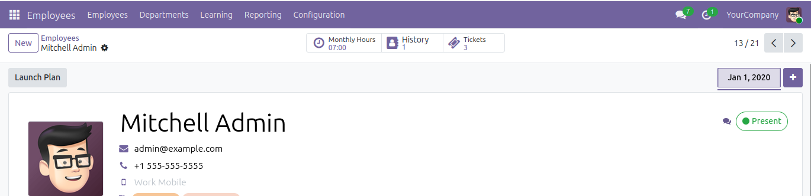
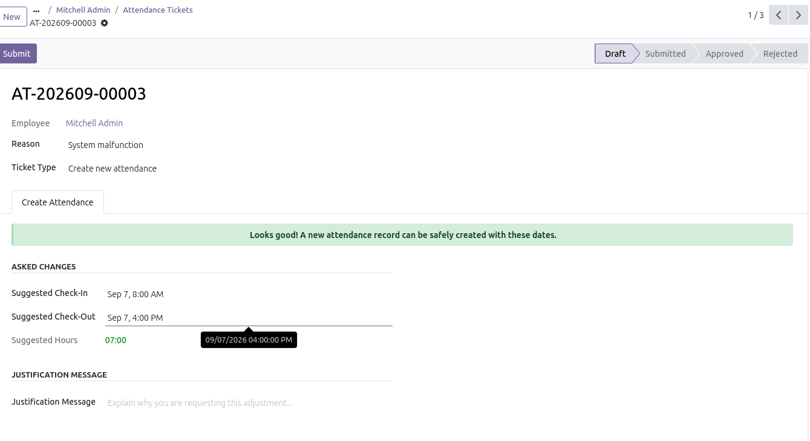
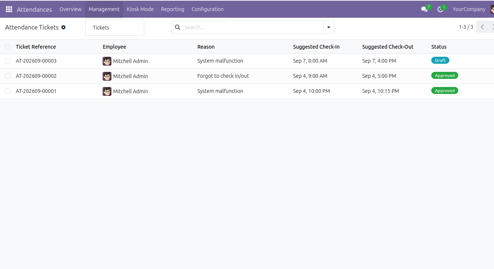
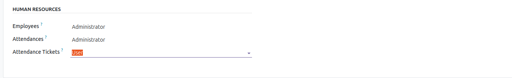

Empower your employees to manage their attendance easily and keep HR records accurate.
Where it all starts: Employees can directly create their adjustment tickets right from their own profile using the integrated Smart Button. It keeps the process intuitive and allows staff to easily track their own ticket history without navigating complex menus.

When an employee submits a ticket, they simply suggest the correct check-in and check-out times. The system automatically handles the heavy lifting by calculating the exact effective working hours, strictly respecting the employee's assigned working schedule and timezone.

Where managers take control: The Ticket List view is the dedicated control center for HR administrators. From here, managers can quickly review all submitted requests at a glance and seamlessly approve or reject tickets to keep attendance records pristine.

Maintain total control over your HR operations. The module includes standard Odoo access rights configurations, allowing you to clearly define who acts as a standard User (can only create tickets) and who holds Administrator privileges (can approve or reject them).
